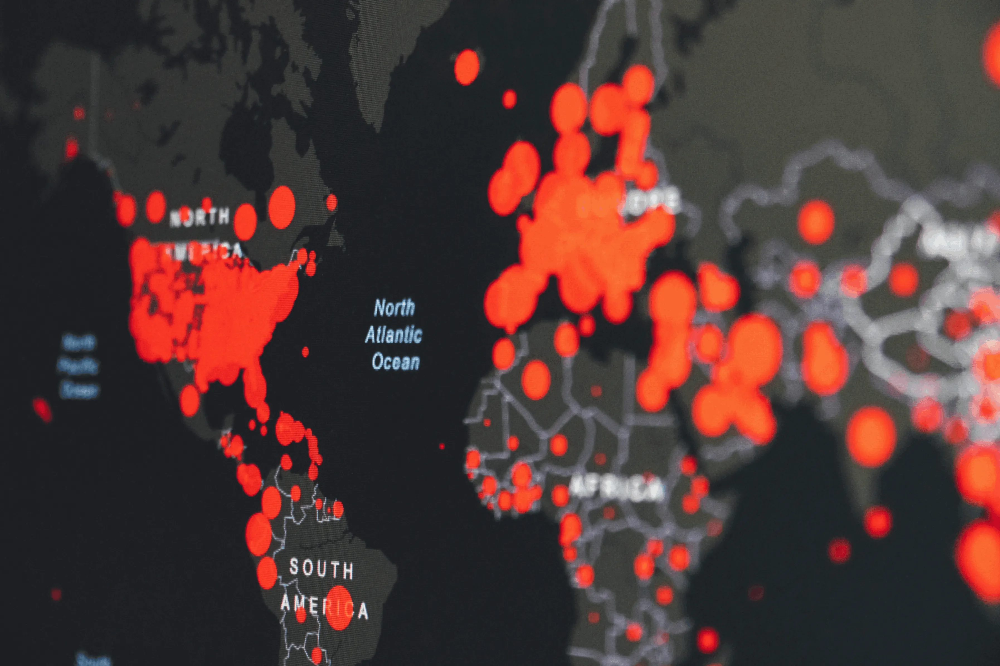

Braintree Analytics Code Challenge
In this project, I solved a SQL challenge for a Data Analyst role at Braintree.
A Data Analyst well versed in SQL, Python,
Power BI and Excel. I love transforming data into insights
to drive growth and optimize performance.
Browse through a collecion of my favourite projects, showcasing my skills and expertise. You can find the rest of my projects here.
In this project, I solved a SQL challenge for a Data Analyst role at Braintree.
In this project, I utilized Power BI to analyze electronic sales data, extracting actionable insights.
In this project, I took raw housing data and transformed it in SQL server to make it more usable for analysis.

In this project, I used SQL Server to explore global COVID-19 Data.
In this project, I harnessed Power BI to conduct comprehensive analysis, extracting valuable insights for informed pharmaceutical sales decision-making.
In this project, I employed Excel to analyze bike sales data, uncovering trends and patterns to inform strategic sales decisions.